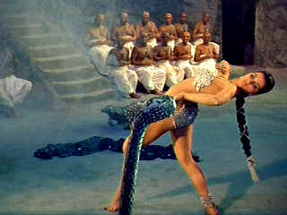

| Indian
Tomb, The/ C-, B |
| Fantoma/1959/101/FS 1.33 |
If you bought The Tiger of Eschnapur, you must have The Indian
Tomb, which completes the tale of love, death, treachery, and enlightenment in Maharajah
Chandra's Eschnapur.
The second part of the pair of Fritz Lang bombs begins in cheerful serial
cliffhanger blissfulness with a five minute recapitulation of the first film. Yes, in five minutes
the audience is up to snuff and ready to return to the sands where a pair of unconscious lovers lie
.
 |
| Charming the scales off the cobra.
©Fantoma |
Thank Shiva for roving caravans. A Caravan finds Seetha and Harald and brings
them to a village to recover. Meanwhile, back at Chandra's palace brother-in-law architect partner
Walter Rhodes and Harald's sister arrive in Eschnapur to find brother missing. Chandra, practically
foaming at the mouth, insists that Rhodes begin construction of a tomb instead of the contracted
hospital project. Prince Ramagani is sent with crack trackers to find Harald and Seetha and decrees
go forth to every village that helping the missing lovers will mean death and destruction.
Despite god Shiva's spidery magic, Seetha finds herself a prisoner at the
palace. Ramagani is convinced that if Chandra marries Seetha, he will fall to the prince. He
convinces Chandra to reconsider Seetha's treachery. What's a maharajah to do? Happily lust rules
the day and he is willing to forgive and forget, but not for long, because Seetha admits she still
loves Harald. And what has become of Harald? Is he dead? Who will save Seetha? Will the
foundations of the palace collapse? What about the sudden appearance of General Dagh? The
Indian Tomb provides all the answers.
Once again, the second of the Lang films features the spectacular location
sets in India. Debra Paget gets a revs up the dance moves a little more as Seetha. Paul Christian
(Hubschmid) does his best to break through the script chains. Claus Holm and Sabine Bethmann
playing the Rhodes' join the cast to over-act in unison.
The Fantoma team has treated these late Lang efforts with great respect.
The DVD of The Indian Tomb is consistent with The Tiger of Eschnapur in every
respect. The transfer elements appear worked over big time. Colors are beautifully saturated.
The appear almost painted on the screen. Individual colors are well defined with no color bleeding.
Dig those big jewels: even the light reflected through them is softly captured on clothing. The
chief transfer shortcoming is color instability at scene transitions. It's almost as if the
transfer equipment hesitates before locking in on a new color scheme. The material is otherwise
quite clean. Save for a couple of small scenes, image is delivered with maximum resolution.
Blacks are as rich as can be. Shadow detail balances perfectly with the intense color scheme.
Lighting in a few Day-for-Night sequences is questionably bright. You can watch Paget and company
go through the paces in English of German 2 channel mono. In English, the dialogue has a hollow
ring to it. In German, it looks ridiculous. English subtitles are available if you choose German
language.
|
|
|
|

 Gary Morris's insightful publication Bright Lights
Film Journal turns the celluloid in films from a unique perspective. Click on the image above
for more pure movie views. Gary Morris's insightful publication Bright Lights
Film Journal turns the celluloid in films from a unique perspective. Click on the image above
for more pure movie views.

An elegantly presented fan site dedicated to one of Hollywood's great action stars.

Excellent resource for movie review links, with many early looks.

Selections from the Feature Archive include articles on
Akira Kurosawa, Blonde Bimbos,
Frank
Darabont, Steven Culp,
John
Herzfeld or Vietnam: The
Hollywood Pariah, and many more....
Director Walks the Wire
Balanced by an armor of movie lore and filmmaking daring, director John Herzfeld is comfortable
walking the high wire. Check out this interview by Stu Kobak.

Spartacus
(SE) /A, B+

This is one of the great epic films with an animally electric performance
from Kirk Douglas. Great special editon.

The
Movie Poster Archive includes extensive poster images from the films of stars like Susan Hayward,
Kirk Douglas, Katharine Hepburn and many more. Our featured star is Susan Hayward
|